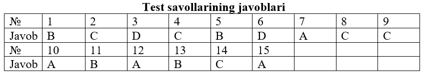
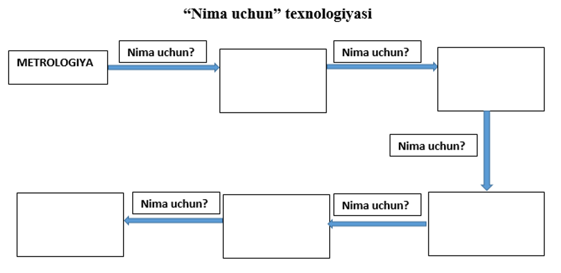

Mashgʻulotning maqsadi: OʻzR Oʻlchashlar birliligini ta’minlash davlat tizimi, metrologiya
sohasida
qoʻllaniladigan asosiy atamalar, tushunchalar va ta’riflarni oʻrganish.
Oʻlchashlar birliligini ta’minlash davlat tizimi – bu davlat tomonidan tartibga solinadigan
oʻlchashlar
birliligini ta’minlash boʻyicha ishlarni oʻtkazish talablari, qoidalari, nizomlari, me’yorlari va
tartibini belgilovchi, oʻzaro bog‘liq va bir-birini taqozo qiluvchi xalqaro, davlatlararo va milliy
me’yoriy va metodik hujjatlar majmuidir. Bunday hujjatlar majmui metrologiya boʻyicha milliy idora
tomonidan tasdiqlanadi va (yoki) mamlakat hududida foydalanishga kiritiladi.
Hozirgi vaqtda Oʻz OʻDT da Oʻzstandart Agentligi kiritgan 3000 dan ortiq turli toifa va darajadagi
me’yoriy va metodik hujjatlar bor.
Oʻz OʻDT ning asosini metrologiya boʻyicha milliy idora ishlab chiqadigan va tasdiqlaydigan asos
boʻluvchi me’yoriy hujjatlar tashkil etadi. Bunday me’yoriy hujjatlarda qonuniy metrologiya sohasidagi
asosiy qoidalar va protseduralar oʻrnatiladi. Asos boʻluvchi me’yoriy hujjatlarda birliklar, oʻlchash
usullari va vositalari, oʻlchash laboratoriyalariga davlat talablari, metrologik tekshiruv va nazorat
sub’ektlari va obyektlarining harakat sohalari, huquqlari va vakolatlari aks ettiriladi.
Metrologik me’yorlar qoidalarni oʻrnatuvchi va Oʻzbekiston Respublikasi hududida majburiy kuchga ega
boʻlgan oʻlchashlar birliligini ta’minlash boʻyicha me’yoriy hujjatlarni tasdiqlash va davlat
roʻyxatidan oʻtkazish ishlarini Oʻzstandart Agentligi bajaradi.
Oʻlchashlar birliligini ta’minlash shartlaridan biri ularning natijalarini qoʻllanishga yoʻl
qoʻyilgan
fizik kattalik birliklarida ifodalashdir.
Oʻlchashning zarur aniqligi va birliligini ta’minlash uchun qoʻllanayotgan fizik kattalik
birliklarining
oʻlchamlari etalon va namunaviy oʻlchash vositalari yordamida saqlanadi va qayta tiklanadi.
Etalonlarning umumiy qoidalari, tasniflanishi va maqsadlari, ularni saqlash va qoʻllashga boʻlgan
talablarni GOST 8.057-80 belgilaydi.
Oʻlchashlarni bajarish usuliyatlari ham oʻlchashlar birliligini ta’minlash tizimining zarur va muhim
tashkil etuvchisi hisoblanadi. Oʻz DSt 8.010.1:2002 “Oʻz OʻDT. Metrologiya. Atamalar va ta’riflar.
Asosiy va umumiy atamalar” standartida oʻlchashlarni bajarish usuliyati oʻlchashlardagi ishlar va
qoidalarning oʻrnatilgan majmui sifatida ta’riflangan. Oʻlchash ishlari va qoidalari bajarilganda
oʻlchashlar natijalari kafolatlangan aniqlikda olinadi.
Oʻlchashlarni bajarish usuliyatida oʻlchash natijalarining xatoliklari baholangan boʻlishi va muayyan
oʻlchash sharoitlarida oʻrnatilgan aniqlikni ta’minlashi lozim. Oʻlchashlar belgilangan tartibda
attestatlangan oʻlchashlarni bajarish usuliyatiga muvofiq amalga oshirilishi lozim. Oʻlchashlarni
bajarish usuliyatini ishlab chiqish va metrologik attestatlash tartibi Oʻzstandart Agentligi tomonidan
oʻrnatiladi.
Oʻlchashlarni bajarish metodikasiga asosiy talablar Oʻz DSt 8.016:2002 “Oʻz OʻDT. Oʻlchashlarni
bajarish
metodikalari. Asosiy nizomlar” da oʻrnatilgan.
Oʻlchashlarni bajarish usuliyatini ishlab chiqishda Oʻz T 51-088:1999 “OʻZ OʻDT. Oʻlchashlarni
bajarish
metodikalari. Tuzilishi, mazmuni, bayon etilishi va rasmiylashtirilishi”ning nizomlaridan foydalanish
tavsiya etiladi.
Metrologiyada sohasida ishlatiladigan ayrim tushunchalar va ularning ta’riflarini quyida keltirib
oʻtamiz:
Metrologiya – oʻlchashlar, ularning birliligini ta’inlash usullari va vositalari hamda
kerakli aniqlikka
erishish yoʻllari haqidagi fan.
Nazariy metrologiya – metrologiyaning fundamental asoslarini ishlab chiqish predmeti boʻlgan
sohasidagi
metrologiya boʻlimi.
Qonunlashtiruvchi metrologiya – metrologiya boʻyicha milliy idora faoliyatiga qarashli va
birliklar,
oʻlchash usullari, oʻlchash vositalari va oʻlchash laboratoriyalariga davlat talablarini oʻz ichiga
olgan metrologiya qismi.
Amaliy metrologiya – nazariy metrologiya ishlanmalarini va qonunlashtiruvchi metrologiya
qoidalarini
amaliy qoʻllanish masalalari bilan shug‘ullanuvchi metrologiya boʻlimi.
Kattalik – sifat jihatidan ajratilishi va miqdor jihatidan aniqlanishi mumkin boʻlgan
hodisalar, moddiy
tizim, moddaning xossasidir.
Kattalik oʻlchami – muayyan miqdoriy ob’yekt, tizim, hodisa yoki jarayonga tegishli boʻlgan
kattalikning
miqdoriy aniqlanganligi.
Kattalikning qiymati – kattalik uchun qabul qilingan birliklarning ma’lum bir soni bilan
kattalikning
oʻlchamini ifodalash.
Parametr – berilgan kattalikni oʻlchashda yordamchi sifatida qaraladigan kattalik.
Oʻlchash vositasi – metrologik tavsiflari me’yorlangan (MTM), oʻlchami (belgilangan xatolik
chegarasi)
ma’lum vaqt oralig‘ida oʻzgarmas deb qabul qilinadigan, kattalikning oʻlchov birligini qayta tiklaydigan
va (yoki) saqlaydigan, oʻlchashlar uchun moʻljallangan texnik vosita.
Kattalik oʻlchovi – oʻlchov qiymatlari belgilangan birliklarda ifodalangan va zarur
aniqlikda ma’lum
boʻlgan bir yoki bir nechta berilgan oʻlchamlarning kattaligini qayta tiklash va (yoki) saqlash uchun
moʻljallangan oʻlchash vositasi.
Etalon (oʻlchashlar shkalasi yoki birligi etaloni) – kattalikning oʻlchamini qiyoslash
sxemasi boʻyicha
quyi vositalarga uzatish maqsadida shkalani yoki kattalik birligini qayta tiklash va (yoki) saqlash
uchun moʻljallangan va belgilangan tartibda etalon sifatida tasdiqlangan oʻlchashlar vositasi yoki
oʻlchash vositalarining majmui.
Birlamchi etalon – birlikni mamlakatda (shu birlikni boshqa etalonlariga nisbatan) eng
yuqori aniqlik
bilan qayta tiklanishini ta’minlaydigan etalon.
Maxsus etalon – birlikning alohida sharoitlarda qayta tiklanishini ta’minlaydigan va bu sharoitlar
uchun
birlamchi etalon boʻlib xizmat qiladigan etalon.
Davlat etaloni – davlat hududida ushbu kattalikning boshqa barcha etalonlari bilan qayta
tiklanadigan,
birliklarning oʻlchamlarini aniqlash uchun asos sifatida xizmat qilishi vakolatli davlat idorasining
qarori bilan tan olingan etalon.
Ikkilamchi etalon – birlikning oʻlchamini mazkur birlikning birlamchi etalonidan oladigan
etalon.
Nusхa–etalon – birlikning oʻlchamini ishchi etalonlarga uzatish uchun moʻljallangan
ikkilamchi etalon.
Ishchi etalon – birlikning oʻlchamini ishchi oʻlchash vositalariga uzatish uchun
moʻljallangan etalon.
Xalqaro etalon – milliy etalonlar bilan qayta tiklanadigan va saqlanadigan birliklar
oʻlchamlarini
muvofiqlashtirish uchun xalqaro kelishuv boʻyicha xalqaro asos sifatida qabul qilingan etalon.
Milliy etalon – mamlakat uchun boshlang‘ich etalon sifatida xizmat qilishi rasmiy qaror
bilan tan
olingan etalon.
Oʻlchashlar birliligi – oʻlchash natijalari rasmiylashtirilgan kattaliklar birliklarida
ifodalangan va
oʻlchashlar xatoligi berilgan ehtimollik bilan belgilangan chegaralarda joylashgan oʻlchashlar holati.
Oʻlchashlar birliligini ta’minlash – OʻBT Qonunlar, shuningdek oʻlchashlarning birliligini
ta’minlashga
qaratilgan davlat standartlari va boshqa me’yoriy hujjatlarga muvofiq oʻlchashlar birliligiga erishish
va saqlashga qaratilgan metrologik xizmatlar faoliyati.
Metrologik xizmat – bu oʻlchashlar birliligini ta’minlash ishlarini bajarish va metrologik
tekshiruv va
nazoratni amalga oshirish uchun qonunga muvofiq tashkil etiladigan xizmat.
Davlat metrologik xizmati – bu mamlakatda oʻlchashlar birliligini ta’minlash boʻyicha
ishlarni
mintaqalararo va sohalararo darajada bajaruvchi va davlat metrologik tekshiruvi va nazoratini amalga
oshiruvchi metrologik xizmat.
Metrologiya boʻyicha milliy idora – davlatda oʻlchashlar birliligini ta’minlash ishlariga
rahbarlikni
bajarishga vakolatli davlat boshqaruv idorasi.
Metrologik tekshiruv – oʻlchash jarayoni elementlarini me’yoriy hujjatlar talablariga
muvofiqligini
aniqlash va tasdiqlashni oʻz ichiga olgan vakolatli idoralar va shaxslar faoliyati.
Metrologik nazorat – oʻlchash jarayoni elementlarining holati, ishlatilishi va oʻrnatilgan
tartibda
metrologik qoidalar amalga oshirilganligini baholash uchun vakolatli idoralar va shaxslar faoliyati.
Oʻlchash vositalarini tekshiruvdan oʻtkazish – oʻlchash vositalarining belgilab qoʻyilgan
texnikaviy
talablarga muvofiqligini aniqlash va tasdiqlash maqsadida davlat metrologiya xizmati idoralari (vakolat
berilgan boshqa idoralar, tashkilotlar) tomonidan bajariladigan amallar majmui.
Oʻlchash vositalarini kalibrlash – metrologik jihatlarning haqiqiy qiymatlarini va oʻlchash
birliklarining qoʻllashga yaroqliligini aniqlash hamda tasdiqlash maqsadida kalibrlash laboratoriyasi
bajaradigan amallar majmui.
Takrorlash uchun savollar:
1. Metrologiyaning rivojlanish tarixi haqida yana nimalarni bilasiz?
2. Metrologiya fan sifatida qanday shakllandi?
3. Metrologiyaning fan sifatida shakllanishida qaysi olimlarning hissasi bor deb hisoblaysiz?
4. Metrologiya sohasida ishlatiladigan asosiy atamalar va tushuchalarni ayting.
5. Qadimiy va koʻhna oʻlchov birliklaridan yana qaysilarni bilasiz?
6. Qadimgi Markaziy Osiyo mamlakatlarida qoʻllanilgan oʻlchovlar haqida nimalarni bilasiz?
7. Turli mamlakatlarda qoʻllanilgan oʻlchovlar oʻrtasida bog’liqlik va oʻxshashlik bormi?
8. Hozirgi vaqtda ham inson tanasi a’zolariga moslikka asoslangan oʻlchash birliklari amalda
qoʻllaniladimi?
1. Mеtrоlоgiya - bu ...
A) Oʻlchаshlar haqidagi fan
B) Oʻlchashlar, ularning birliligini ta’minlash usullari va vositalari hamda kerakli aniqlikka
erishsish
yoʻllari haqidagi fan.
C) Oʻlchаsh nаtijаlаrini qаytа ishlаsh, oʻlchashlardagi xatoliklarni bartaraf etish usullari va
yoʻllari haqidagi fan
D) Oʻlchаsh, oʻlchаm, mаntiq, ilm mа`nоlаrini bildirаdigаn fаn}
2. Mеtrоlоgiya soʻzining mа`nоsi nimаni bildirаdi?
A) Oʻrgаnish, ilm
B) Hisоb, hisоblаsh, ilm
C) Oʻlchаsh, oʻlchоv, fаn
D) Tаhlil qilish
3. “Mеtrоlоgiya toʻg‘risidа”gi qоnun qаchоn qаbul qilingаn?
A) 1990 yil
B) 1980 yil
C) 2000 yil
D) 1993 yil
4. “Mеtrоlоgiya toʻg‘risidа”gi qоnun nechta moddadan iborat?
A) 12
B) 23
C) 21
D) 30
5. Mеtrоlоgiyani nеchtа boʻlimgа boʻlinadi?
A) 2 tа
B) 3 tа
C) 1 tа
D) Boʻlimlarga boʻlinmagan
6. Nazariy metrologiya - …
A) Metrologiya boʻyicha milliy idora faoliyatiga qarashli va birliklar, oʻlchash usullari, oʻlchash
vositalari va oʻlchash laboratoriyalariga davlat talablarini oʻz ichiga olgan metrologiya boʻlimi.
B) Nazariy metrologiya ishlanmalarini va qonunlashtiruvchi metrologiya qoidalarini amaliy qoʻllanish
masalalari bilan shug‘ullanuvchi metrologiya boʻlimi.
C) Metrologiyaning oʻlchash usullari va vositalarini oʻrganadigan alohida boʻlimi
D) Metrologiyaning fundamental asoslarini ishlab chiqish predmeti boʻlgan sohasidagi metrologiya
boʻlimi
7. Qonunlashtiruvchi metrologiyaning ta’rifini toping.
A) Metrologiya boʻyicha milliy idora faoliyatiga qarashli va birliklar, oʻlchash usullari, oʻlchash
vositalari va oʻlchash laboratoriyalariga davlat talablarini oʻz ichiga olgan metrologiya boʻlimi.
B) Metrologiyaning fundamental asoslarini ishlab chiqish predmeti boʻlgan sohasidagi metrologiya
boʻlimi
C) Nazariy metrologiya ishlanmalarini va qonunlashtiruvchi metrologiya qoidalarini amaliy qoʻllanish
masalalari bilan shug‘ullanuvchi metrologiya boʻlimi.
D) Metrologiyaning oʻlchash usullari va vositalarini oʻrganadigan alohida boʻlimi
8. Metrologiya boʻyicha milliy idora faoliyatiga qarashli va birliklar, oʻlchash usullari,
oʻlchash
vositalari va oʻlchash laboratoriyalariga davlat talablarini oʻz ichiga olgan metrologiya boʻlimi bu
- …
hisoblanadi.
A) Amalaiy metrologiya
B) Nazariy metrologiya
C) Qonunlashtiruvchi metrologiya
D) Tarixiy metrologiya
9. Metrologiyaning fundamental asoslarini ishlab chiqish predmeti boʻlgan sohasidagi metrologiya
boʻlimi
qanday nomlanadi?
A) Amalaiy metrologiya
B) Tarixiy metrologiya
C) Nazariy metrologiya
D) Qonunlashtiruvchi metrologiya
10. Qaysi javobda bizning ajdodlarimiz oʻlchashlarda foydalangan oʻlchov birliklari
keltirilgan?
A) qadam, qarich, gaz, pud, botmon, osham, osh qoshiq, farsax, misqol
B) gaz, quloch, botmon, osham, gallon, yard, farsax, arshin, desyatina
C) yard, qarich, gaz, pud, zolotnik, osham, osh qoshiq, farsax, misqol
D) qadam, qarich, fut, unsiya, botmon, arshin, osh qoshiq, farsax
11. Bir botmon necha kilogrammga teng?
A) 262,08 kg
B) 163,8 kg
C) 16,38 kg
D) 131,04 kg
12. Amaliy metrologiya -…
A) Nazariy metrologiya ishlanmalarini va qonunlashtiruvchi metrologiya qoidalarini amaliy qoʻllanish
masalalari bilan shug‘ullanuvchi metrologiya boʻlimi.
B) Metrologiyaning oʻlchash usullari va vositalarini oʻrganadigan alohida boʻlimi
C) Metrologiya boʻyicha milliy idora faoliyatiga qarashli va birliklar, oʻlchash usullari, oʻlchash
vositalari va oʻlchash laboratoriyalariga davlat talablarini oʻz ichiga olgan
D) Metrologiyaning fundamental asoslarini ishlab chiqish predmeti boʻlgan sohasidagi metrologiya
boʻlimi
13. Nazariy metrologiya ishlanmalarini va qonunlashtiruvchi metrologiya qoidalarini amaliy
qoʻllanish
masalalari bilan shug‘ullanuvchi metrologiya boʻlimi bu - … dir.
A) Nazariy metrologiya
B) Amaliy metrologiya
C) Tarixiy metrologiya
D) Qonunlashtiruvchi metrologiya
14. Quyidagi ta’rifda qoldirilgan soʻzlarni toping va oʻrniga qoʻying: “Metrologiya bu-…
ularning
birliligini ta’minlash … hamda kerakli aniqlikka erishsish yoʻllari haqidagi fandir.
A) Oʻlchash usullari, texnik vositalari
B) Oʻlchashlar, asboblari va jihozlari,
C) Oʻlchаshlar, usullari va vositalari
D) Oʻlchash asboblari, asoslari
15. Mеtrоlоgik nаzоrаt – bu …
A) Oʻlchаsh vоsitаlаrini qiyoslаsh, ulаrning birliligini tа`minlаsh hаmdа mеtrоlоgiya qоidаlаrigа
аmаl
qilinishini tеkshirishgа qаrаtilgаn fаоliyat
B) Mеtrоlоgiya qоidаlаrigа riоya qilinishini tеkshirishgа аsоslаngаn fаоliyat
C) Dаvlаt idоrаlаridа oʻlchаshlаr birliligini tа`minlаshgа qаrаtilgаn fаоliyat
D) Oʻlchаsh vоsitаlаrini sinаsh vа аttеstаtlаsh bilаn shug‘ullаnuvchi fаоliyat

Talabalar quyida berilgan “Nima uchun” texnologiyasi asosida quyidagi sxemani toʻldiradilar.

Mavzuni takrorlash uchun savollar:
1. Oʻlchashlar birliligini ta’minlash davlat tizimi deganda nimani tushunasiz?
2. Oʻlchashlarni bajarish metodikasi haqida nimalarni bilasiz?
3. Metrologiya qanday boʻlimlarga boʻlinadi?
4. Metrologiya sohasida qoʻllaniladigan qanday atamalar va tushunchalarni bilasiz?
5. Metrologiyaning tarixi haqida qanday ma’lumotlarni bilasiz?